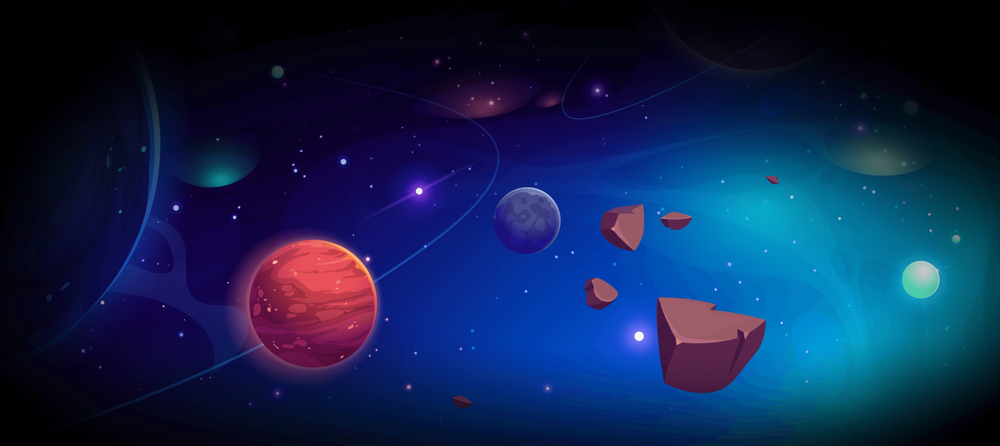
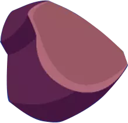
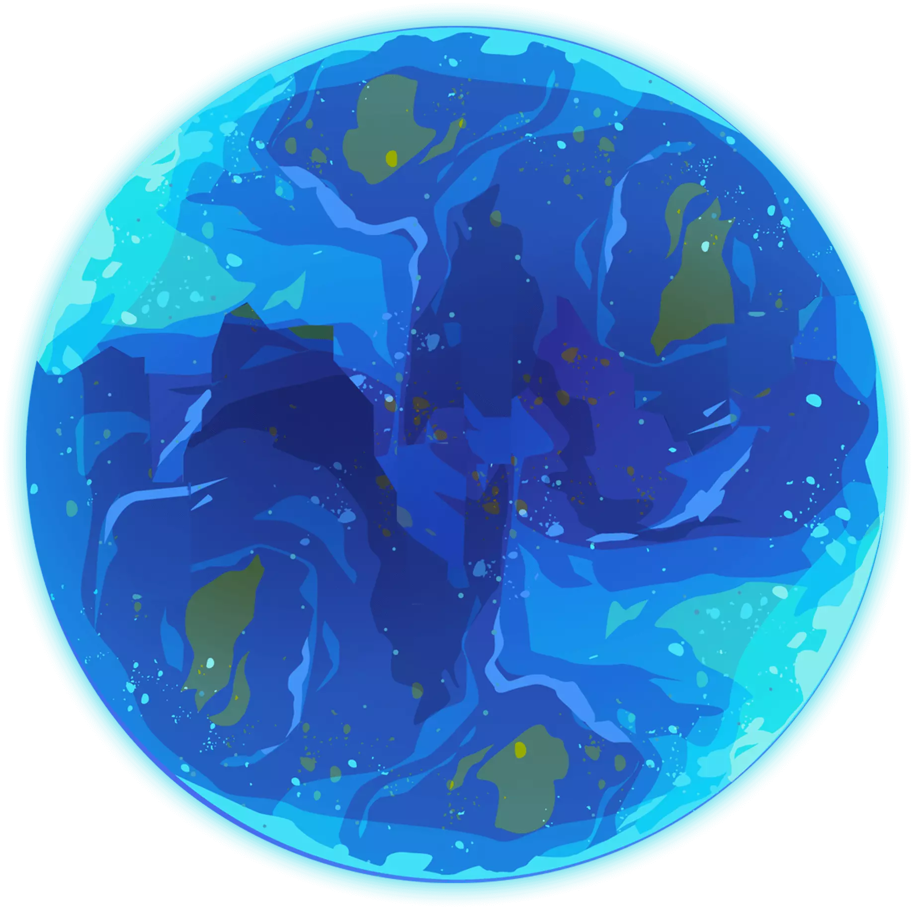
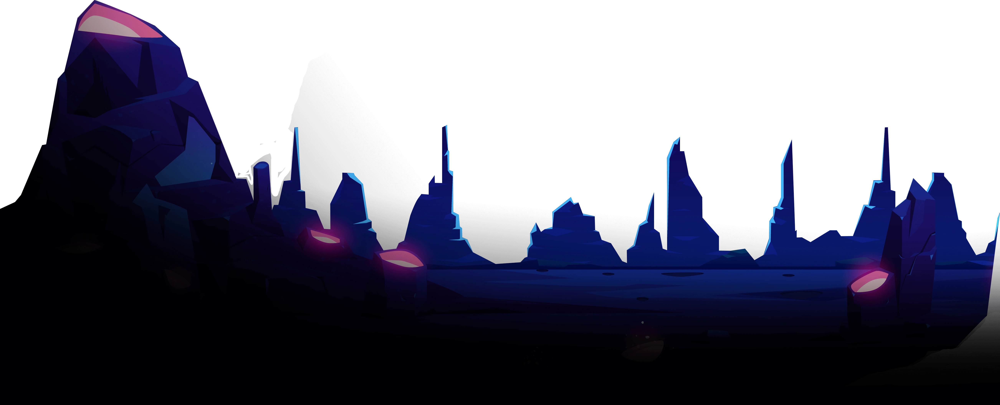
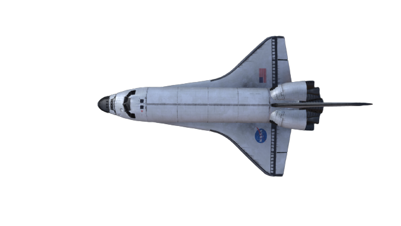
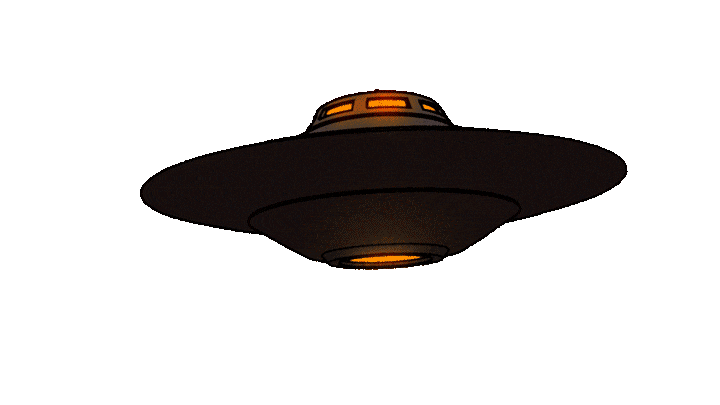
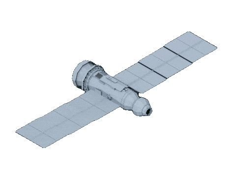
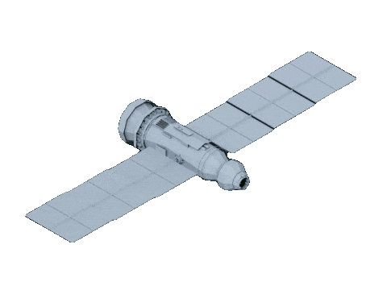
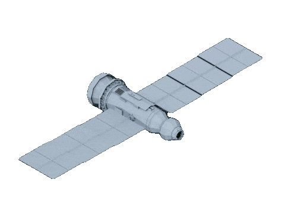
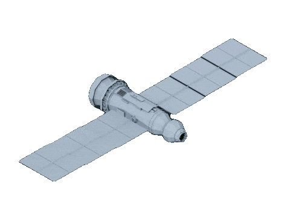

 




Mercury
Mercury is the closest planet to the Sun but, perhaps surprisingly, it does not have the highest temperatures. It is the second densest planet of the Solar System, but also the smallest planet. Wikpedia
Venus
Venus is the second planet from the Sun and the sixth-largest. Together with Mercury, they are the only planets without a satellite, even though Mercury is closer to the sun, Venus is the hottest planet. Wikpedia
Earth
Earth is the third planet from the Sun and the fifth largest planet in the Solar System with the highest density. It is currently the only known location where life is present. Wikpedia
Mars
Mars is the fourth planet from the Sun and the second-smallest planet with a thin atmosphere, having the surface features reminiscent both of the impact craters of the Moon, and the valleys, deserts and polar ice caps of Earth. Wikpedia
Jupiter
Jupiter is the fifth planet from the Sun and the largest planet of the Solar System. It is the oldest planet of the Solar System thus it was the first to take shape out of the remains of the solar nebula. Wikpedia
Saturn
Saturn is the sixth planet from the Sun, with the largest planetary rings in the Solar System. It is the second-largest planet after Jupiter, and recently, with many other moons being discovered, it surpassed the number of Jupiter’s moons. Wikipedia
Uranus
Uranus is the seventh planet discovered in the Solar System that also led to the discovery of the last planet, Neptune they are both referred to as ice giants. Wikipedia
Neptune
Neptune is the fourth largest and the farthest planet of the Solar System with the most powerful wind speeds out of all the planets. It is the smallest of the gas giants. Wikipedia